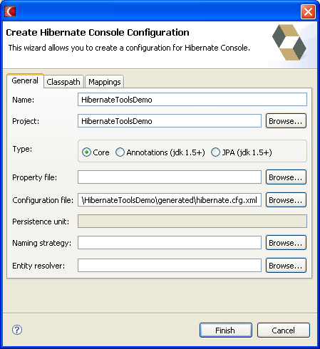

General
Easier setup & full JPA support
A Console configuration can now be associcated with a Java project from which the plugin will read the classpath. This removes the requirement for users to specify an alternative classpath.
Furthermore the user is no longer required to specify a
hibernate.cfg.xml nor hibernate.properties since both can now
be looked up via the default project classpath.
The UI have also been simplified, so now the only thing required now is to name the console configuration; and even that will be automatically filled out if you start the wizard on some resource.

Furthermore JPA/EJB 3 entity classes is now fully
supported by simply choosing JPA as the configuration
type and optionally enter a persistence unit name.
Hibernate EntityManager will then be used to
automatically scan the classpath for entities according
to the setup in a META-INF/persistence.xml
Console logs per Configuration
The Error log could get flooded by error messages reported from Hibernate during normal usage; e.g. syntax errors in the entered HQL. The error log should now only show an error if it is an error situation in the Hibernate plugin.
The other "normal usage" logging is now sent to a seperate Eclipse Console log per Configuration; instead of one big log.

Since this log is just what Hibernate normally logs you
can adjust what gets logged to these consoles by configuring
the log4j configuration
(org.hibernate.eclipse/hibernate-log4j.properties)
in the plugins directory.
Query editing
Max results support
Previously HQL and Criteria execution were done unbounded; meaning it could result in OutOfMemoryError's on large data set. To remedy this the query editors now have a "Max results" field which can be filled in to limit the amount of data being queried for.

Reverse Engineering
Oracle improvements
The OracleMetaDataDialect is now enabled by default for Oracle related dialects. The Oracle specific handling have also been improved greatly so now it is much faster than normal JDBC MetaData API.
If you experience issues with the OracleMetaDataDialect you can fall back to using the JDBC MetaData API by adding the following property to your hibernate.properties or hibernate.cfg.xml:
hibernatetool.metadatadialect=org.hibernate.cfg.rveng.dialect.JDBCMetaDataDialect
Automatic handling of identifier casing
Previously we performed lookups for tables, columns etc. verbatim even though the database might not support mixed case lookups e.g. "Category" instead of "CATEGORY" when a database stores identifiers in uppercase.
This could result in some issues with respect to overrides specified in reveng.xml would not take effect because the casing did not match.
To remedy this the JDBCMetaDataDialect now perform lookups and comparisons according to what the java.sql.DatabaseMetaData reports with respect to casing of identifiers.
Schema documentation
hbm2doc improvements
hbm2doc got a major overhaul for this release, thanks to Mark Hobson. The long list of improvements contain amongst other things: pure XHTML to allow it to be rendered correctly in all major browsers; better support for subclassed models and inner classes and in general a much cleaner layout.
Table and class diagrams
hbm2doc will now generate a two diagrams with GraphViz. A single class diagram for all entities and their associations and a single table diagram with the tables and the foreign key constraints.

To enable this GraphViz needs to be available and the dot.executable property set to the GraphViz dot executable when running hbm2doc from Ant or Eclipse
Code generation
Java formatting via Ant
When generating Java code from inside Eclipse we always formatted the source according to the current Java project; with Ant no such formatting took place.
This is now possible by using the Ant java formatter which utilizes Eclipses code formatter. See HBX-811 for the details.
<taskdef name="javaformatter" classname="org.hibernate.tool.ant.JavaFormatterTask" classpathref="tasks.classpath"/>
<javaformatter configurationfile="optional-eclipse-formatting-settings">
<fileset dir="${build.dir}">
<include name="**/*.java"/>
</fileset>
</javaformatter>
Better <meta> attributes
Multiple issues with respect to meta attributes have been fixed; especially inherited meta attributes are not broken anymore (HBX-793) plus meta attributes are now possible to specify in reveng.xml (HBX-575) for better customization of the resulting java code from a reverse engineered database.
More control in hbmtemplate
hbmtemplate can now control which elements should actually be passed into the template. Allowing you to e.g. only process entities and not any components/composite-id's.
<hbmtemplate ... foreach="entity"/>
The foreach attribute supports a comma seperated list of the following values: configuration, entity and component.